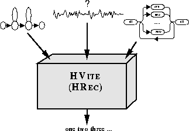

The previous chapter has described how to construct a recognition network specifying what is allowed to be spoken and how each word is pronounced. Given such a network, its associated set of HMMs, and an unknown utterance, the probability of any path through the network can be computed. The task of a decoder is to find those paths which are the most likely.
As mentioned previously, decoding in HTK is performed by a library module called HREC. HREC uses the token passing paradigm to find the best path and, optionally, multiple alternative paths. In the latter case, it generates a lattice containing the multiple hypotheses which can if required be converted to an N-best list. To drive HREC from the command line, HTK provides a tool called HVITE. As well as providing basic recognition, HVITE can perform forced alignments, lattice rescoring and recognise direct audio input.

To assist in evaluating the performance of a recogniser using a test database and a set of reference transcriptions, HTK also provides a tool called HRESULTS to compute word accuracy and various related statistics. The principles and use of these recognition facilities are described in this chapter.